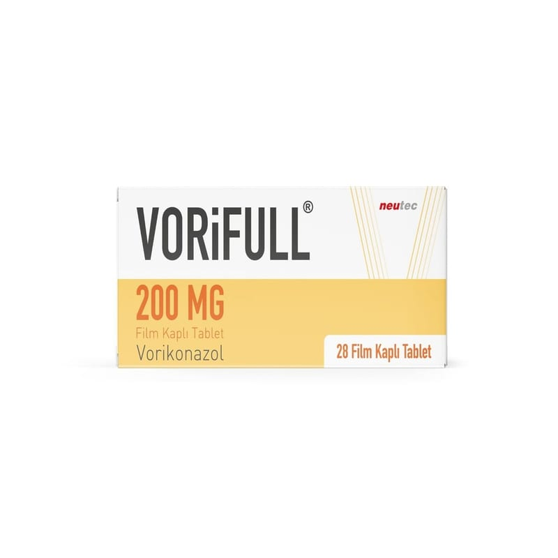

Vorifull 200 mg Film Kaplı Tablet, 28 Adet

Ne için kullanılır
KT · Bölüm 1VORİFULL, beyaz, oblong (boyu eninden fazla), bikonveks film kaplı tablettir. Tabletler 14 ve 28 tabletlik PVC şeffaf / aluminyum blister ambalajlarda kullanıma sunulmuştur.
VORİFULL, mantar enfeksiyonlarına karşı kullanılan (antifungal) triazol adı verilen bir ilaç grubuna dahildir. Bu ilaçlar çok çeşitli mantar hastalıklarını tedavi etmede kullanılırlar.
VORİFULL bu enfeksiyonlara neden olan mantarları öldürerek veya büyümelerini durdurarak etki göstermektedir.
VORİFULL (2 yaşın üstündeki çocuklarda ve yetişkinlerde) ; Aspergillus, Scedosporium, Fusarium ve flukonazole dirençli Candida’nın neden olduğu ciddi mantar enfeksiyonları tedavisinde Beyaz kan hücre sayısı normal olan hastalarda kandaki mantar enfeksiyonunun (kandidemi) tedavisinde kullanılır.
VORİFULL, yüksek risk altındaki kemik iliği nakli alıcısı hastalarını mantar enfeksiyonlarından koruma amaçlı kullanılır.
Bu ilaç yalnız bir doktor gözetiminde kullanılmalıdır. VORİFULL esas olarak hastalığı ciddi olanlarda kullanılır.